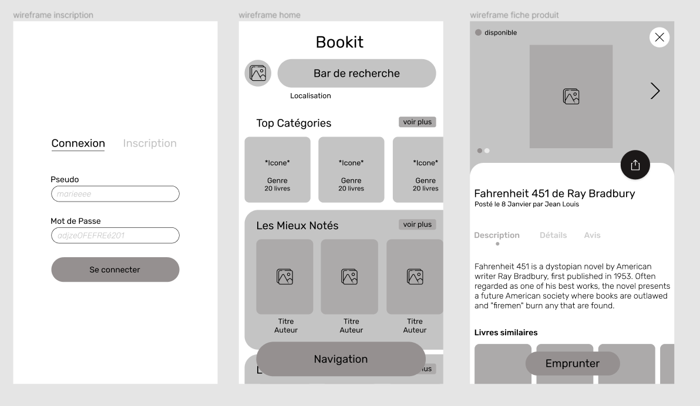

Bookit
Une Application de Partage de Livres
Le brief était de créer une application gratuite de partage de livres entre particuliers. Les options à intégrer dans le projet étaient un parcours d'emprunt de livres face à face et/ou par dépôt ainsi que la possibilité de rejoindre différent clubs. Un club est un compte privé créé pour pouvoir échanger des livres au sein d'une même organisation. A titre d'exemple, l'école Hetic peut créer son club pour permettre à ses élèves d'échanger des livres en rapport avec leurs études.
Phase de Recherche : User Experience (UX)
La première étape étant la phase de recherche, j'ai réalisé un audit concurrentiel des plateformes proposant la vente ou l'échange de livres pour m'inspirer de leurs points forts (parcours, options, wording).
Brainstorming et Interviews
Après m'être fait une idée générale du type de plateforme attendue, j'ai brainstormé des idées sur le parcours et les options que je voulais implémenter dans ma conception du produit. J'ai ensuite recueilli des données qualitatives en menant des interviews utilisateurs afin d'identifier leurs attentes et besoins par rapport à ce type de plateforme. J'ai demandé aux utilisateurs quels étaient les points bloquants qu'ils avaient déjà rencontrés sur des plateformes similaires afin d'y remédier dans ma propre conception d'interface. Une fois les interviews menés, j'ai rassemblé les données dans un tableau Google Sheets et les ai triées par ordre de priorité. Le format mobile a été choisi comme format principal en réponse aux retours utilisateurs.
Les besoins prioritaires étant établis, j'ai construit deux parcours utilisateurs complets pour pouvoir analyser les actions successives à accomplir pour pouvoir emprunter un livre. Le premier parcours est celui de l'utilisateur voulant emprunter un livre, le deuxième est celui de l'utilisateur mettant ses livres à disposition. J'ai pu ainsi identifier les axes d’amélioration de chacun des deux parcours.
Wireframes
Une fois les parcours créés, j'ai commencé la conception des wireframes sur Figma en prenant en compte les données receuillies. Le but était de concevoir une plateforme simple d'utilisation de part sa navigation et son design.
Conception Graphique - User Interface (UI)
Maquettes Graphiques
Une fois les wireframes validées, j'ai débuté la conception graphique. J'ai réalisé une charte graphique regroupant le logo, la palette de couleurs, la police et les icônes, puis, j'ai appliqué la couche graphique à mes wireframes en respectant la charte.
Inscription
L'utilisateur doit s'inscrire sur l'application pour pouvoir l'utiliser. L'inscription permet de récolter certaines données de l'utilisateur comme son nom complet, son e-mail et son pays de résidence. Ces données nous seront utiles pour construire la base de données de l'application et pouvoir facilement communiquer avec ses utilisateurs. Nous pouvons aussi récolter des données plus spécifiques comme le genre de livres que l'utilisateur aime (science fiction, histoire..) afin d'optimiser les recommandations.
Home
Sur la Home, des livres sont proposés à l'utilisateur au travers de catégories adaptées à ses goûts (données du formulaire d'inscription ou d'emprunts antérieurs). L'utilisateur a la possibilité de voir plus de catégories ou de naviguer gràce à la barre de recherche. Il lui est possible d'obtenir plus d'informations sur un club en cliquant sur son icône.
Fiche Produit
La fiche produit rassemble toutes les informations dont l'utilsateur a besoin pour choisir un livre : les informations relatives au livre (titre, description, état, disponibilité) et les informations se rapportant à la personne qui le met à disposition (nom, note internautes). Le call to action "emprunter" renvoie l'utilisateur dans le tunnel d'emprunt.
Tunnel d'Emprunt
Dépôt
Face à Face
Prototypage et Tests Utilisateurs
Une fois les maquettes réalisées, le prototypage a été mis en place pour avoir une vue d'ensemble de la plateforme et la faire tester par des utilisateurs. Les retours utilisateurs m'ont permis d'apporter des améliorations aux maquettes réalisées. J'ai ensuite procédé à l'intégration de la Home, de la page catégories et de la fiche produit en HTML / CSS / JS.
! FYI : L'intégration doit être inspectée en format mobile ! :)